About this module
This page contains 15 classroom-ready lessons. Every lesson includes a longer explanation, learning targets, an applied capstone example, and a local instructional diagram that shows the lesson rules in a clear three-step sequence.
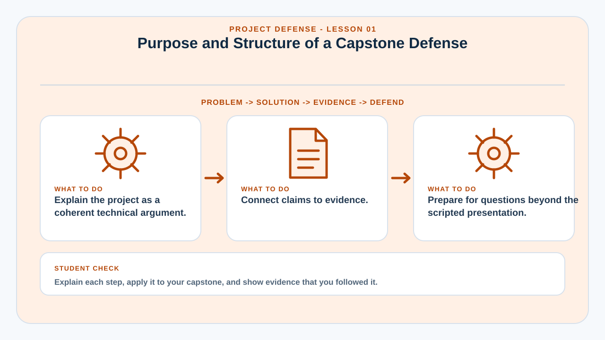
Purpose and Structure of a Capstone Defense
A project defense is a structured technical argument that demonstrates why the project was needed, how it was designed, what was built, how it was evaluated, and what the evidence supports.
The defense is not only a product demonstration. A strong presentation connects problem definition, objectives, requirements, methodology, architecture, implementation, testing, evaluation, and conclusions into one coherent story.
Panel questions often test whether the team understands its own design decisions and limitations. Memorized scripts are less useful than a clear mental model of the system.
The team should prepare both a presentation path and an evidence path. The presentation communicates the main argument; the evidence package supports detailed questions about requirements, tests, source code, database design, results, and deployment.
Learning targets
- Explain the project as a coherent technical argument.
- Connect claims to evidence.
- Prepare for questions beyond the scripted presentation.
Why this matters in a capstone
This lesson helps the team connect implementation decisions to deployment evidence, technical documentation, operational readiness, and questions that may be raised during evaluation or defense.
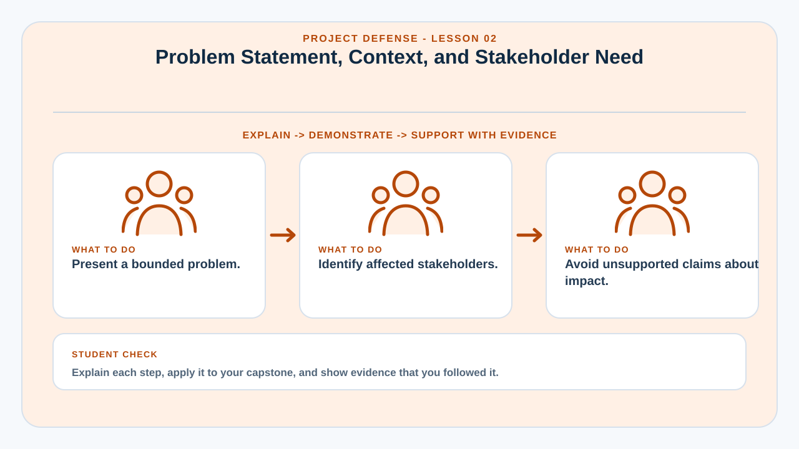
Problem Statement, Context, and Stakeholder Need
The opening must establish a specific, credible problem before presenting the solution.
A problem statement should describe the current situation, affected stakeholders, observed difficulties, operational consequences, and the gap the project addresses. It should avoid exaggerated claims that the study did not measure.
Context may include existing workflows, constraints, organizational setting, and evidence from interviews, observation, records, or literature. The goal is to show that the project responds to a real and bounded need.
The panel should be able to understand why the project exists before hearing technical details.
Learning targets
- Present a bounded problem.
- Identify affected stakeholders.
- Avoid unsupported claims about impact.
Why this matters in a capstone
This lesson helps the team connect implementation decisions to deployment evidence, technical documentation, operational readiness, and questions that may be raised during evaluation or defense.
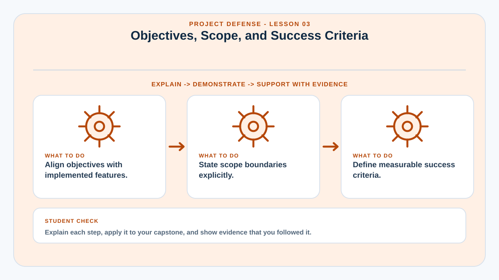
Objectives, Scope, and Success Criteria
Objectives define what the project intends to achieve, while scope defines what the project includes and excludes.
General objectives should be supported by specific objectives that correspond to implemented capabilities or measurable outcomes. Each objective should be traceable to system features and evaluation evidence.
Scope protects the defense from overclaiming. If the project is intended only for a local network, that limitation should be stated rather than presenting the system as universally deployable.
Success criteria define what counts as completion or acceptable performance. These may include functional coverage, usability ratings, performance thresholds, data integrity checks, or deployment readiness.
Learning targets
- Align objectives with implemented features.
- State scope boundaries explicitly.
- Define measurable success criteria.
Why this matters in a capstone
This lesson helps the team connect implementation decisions to deployment evidence, technical documentation, operational readiness, and questions that may be raised during evaluation or defense.
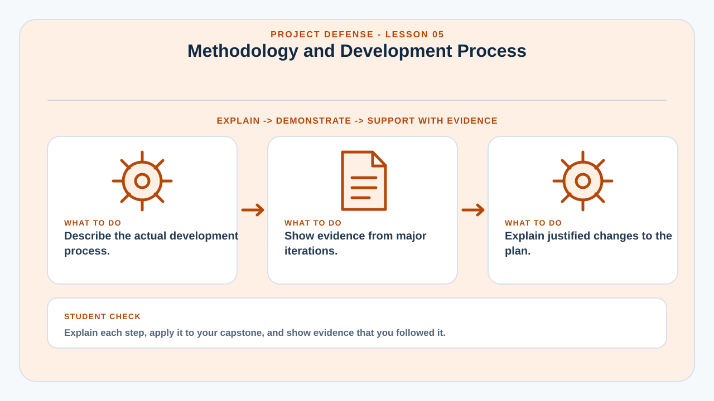
Methodology and Development Process
The methodology explains how the team moved from requirements to a tested implementation.
Whether the project used Agile, iterative development, prototyping, waterfall, or a hybrid process, the team should describe actual activities rather than only presenting a textbook diagram.
Important evidence includes requirements gathering, prioritization, prototypes, development iterations, testing cycles, stakeholder feedback, revisions, and acceptance activities.
The defense should acknowledge deviations from the original plan and explain why changes were made. Adaptation supported by evidence can demonstrate good engineering judgment.
Learning targets
- Describe the actual development process.
- Show evidence from major iterations.
- Explain justified changes to the plan.
Why this matters in a capstone
This lesson helps the team connect implementation decisions to deployment evidence, technical documentation, operational readiness, and questions that may be raised during evaluation or defense.
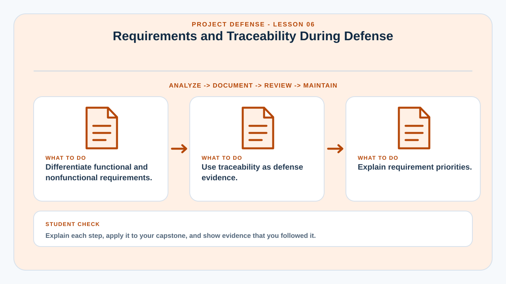
Requirements and Traceability During Defense
Requirements provide a structured way to prove that the implemented system corresponds to identified needs.
The team should distinguish functional requirements from nonfunctional requirements. Functional requirements describe capabilities; nonfunctional requirements address qualities such as security, usability, performance, reliability, and compatibility.
A traceability matrix allows the presenter to quickly show where a requirement appears in the interface, architecture, test plan, and result. This is particularly useful when a panel asks whether a specific feature was actually validated.
Requirements should be prioritized so the team can explain which capabilities are essential and which are enhancements.
Learning targets
- Differentiate functional and nonfunctional requirements.
- Use traceability as defense evidence.
- Explain requirement priorities.
Why this matters in a capstone
This lesson helps the team connect implementation decisions to deployment evidence, technical documentation, operational readiness, and questions that may be raised during evaluation or defense.
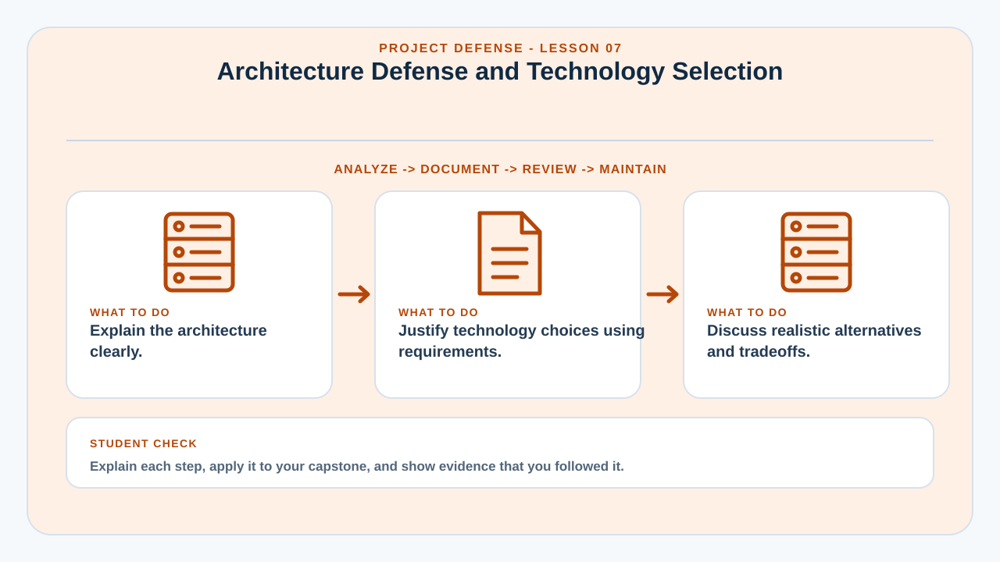
Architecture Defense and Technology Selection
Technology choices should be justified by project requirements, not by popularity alone.
A defense of architecture should explain major components, data flow, security boundaries, deployment environment, and why the selected structure is appropriate for the project's scale.
For each major technology—language, framework, database, hosting model—the team should know the practical reason it was selected, its limitations, and realistic alternatives.
Panels may challenge whether a technology is necessary. A good answer compares tradeoffs such as learning curve, ecosystem, offline capability, infrastructure compatibility, cost, and maintenance.
Learning targets
- Explain the architecture clearly.
- Justify technology choices using requirements.
- Discuss realistic alternatives and tradeoffs.
Why this matters in a capstone
This lesson helps the team connect implementation decisions to deployment evidence, technical documentation, operational readiness, and questions that may be raised during evaluation or defense.
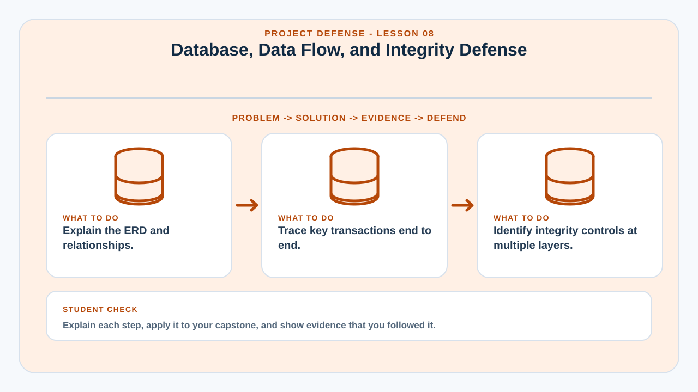
Database, Data Flow, and Integrity Defense
The team should be able to explain how data is represented, validated, related, and protected.
Panel questions may focus on ERD relationships, primary and foreign keys, normalization, indexes, unique constraints, transaction handling, and deletion behavior. The team should understand why tables exist, not just recognize their names.
A data-flow explanation should follow an actual transaction from the user interface through validation and business logic to storage and response.
Data integrity also includes application rules, authorization, backup, and recovery—not only database constraints.
Learning targets
- Explain the ERD and relationships.
- Trace key transactions end to end.
- Identify integrity controls at multiple layers.
Why this matters in a capstone
This lesson helps the team connect implementation decisions to deployment evidence, technical documentation, operational readiness, and questions that may be raised during evaluation or defense.
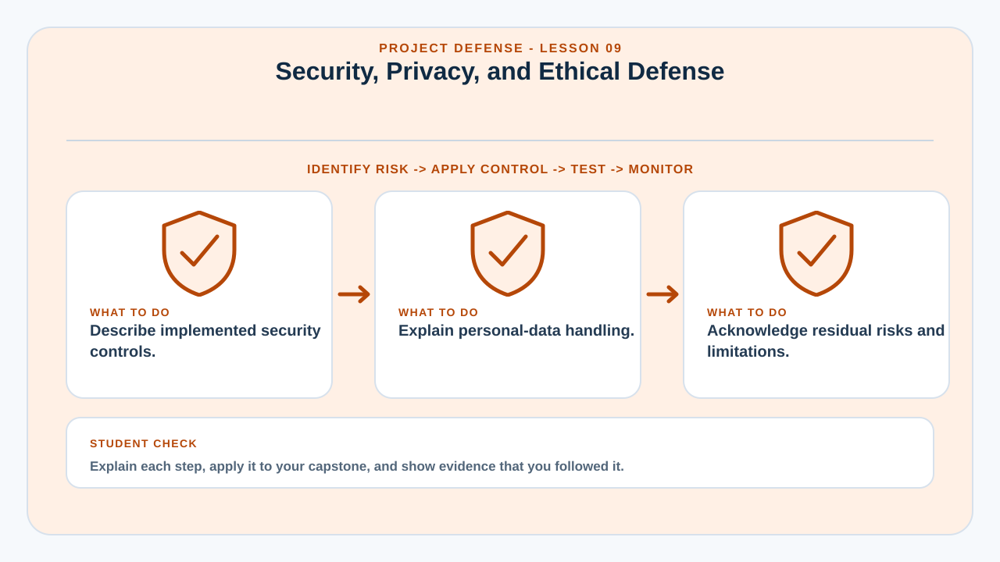
Security, Privacy, and Ethical Defense
Security claims should be specific, implemented, and proportionate to the project's risk.
The team should be prepared to explain authentication, password hashing, authorization, input validation, session control, protected files, logging, backup security, and account management where applicable.
Privacy questions may involve what personal data is collected, why it is necessary, who can access it, how long it is retained, and whether exports or backups expose additional risk.
Ethical defense also means acknowledging residual risk. No realistic system is perfectly secure; the team should identify what controls were implemented and what future hardening remains.
Learning targets
- Describe implemented security controls.
- Explain personal-data handling.
- Acknowledge residual risks and limitations.
Why this matters in a capstone
This lesson helps the team connect implementation decisions to deployment evidence, technical documentation, operational readiness, and questions that may be raised during evaluation or defense.
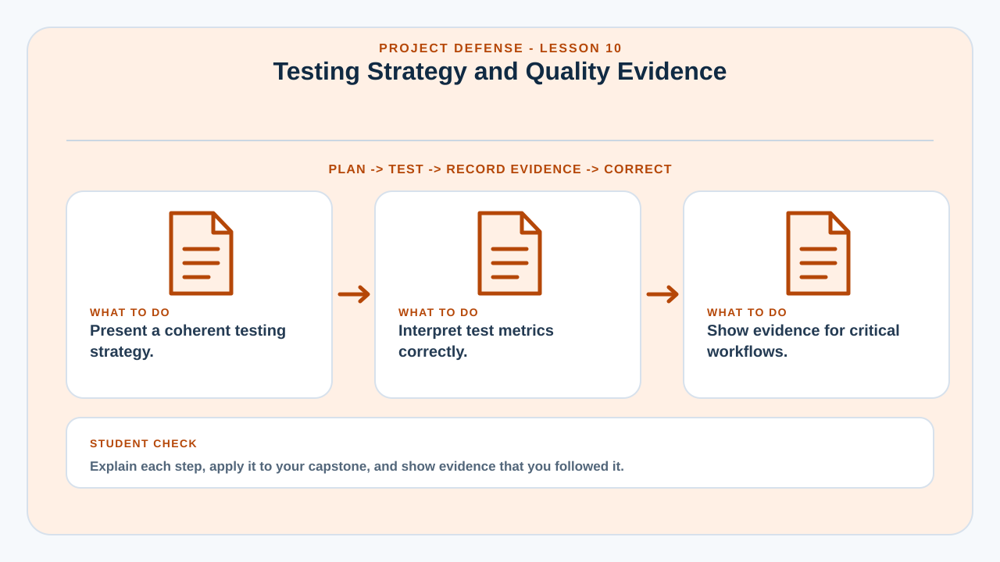
Testing Strategy and Quality Evidence
Testing evidence demonstrates that the system behaves as expected under defined conditions.
The defense should present a testing strategy rather than a collection of screenshots. Explain which test levels were used, how cases were selected, what passed, what failed, and how defects were resolved.
Quantitative summaries can include test case counts, pass rates, response-time measurements, or defect categories, but metrics should be interpreted carefully. A 100% pass rate means only that the defined tests passed—not that the system contains no defects.
Critical workflows deserve deeper evidence, especially authentication, data integrity, permissions, backup, restore, and major business transactions.
Learning targets
- Present a coherent testing strategy.
- Interpret test metrics correctly.
- Show evidence for critical workflows.
Why this matters in a capstone
This lesson helps the team connect implementation decisions to deployment evidence, technical documentation, operational readiness, and questions that may be raised during evaluation or defense.
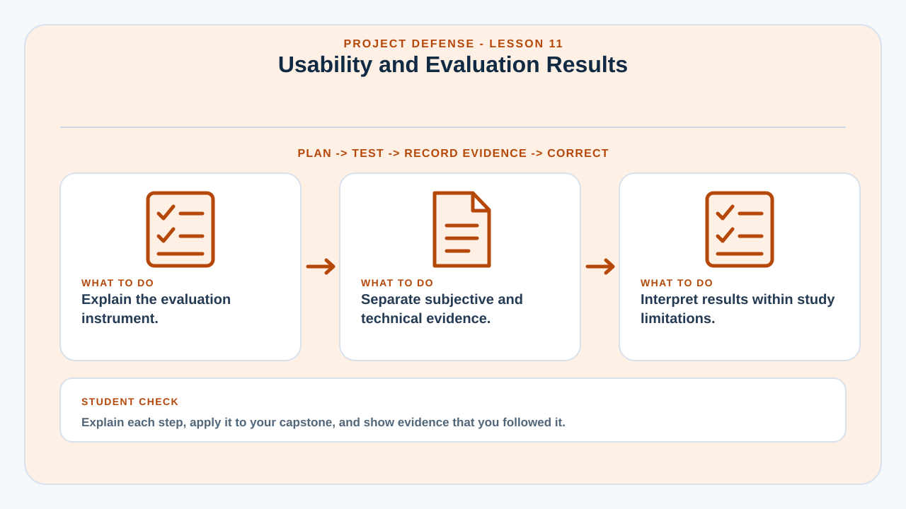
Usability and Evaluation Results
Evaluation results must be explained in terms of the instrument, respondents, measures, and limitations.
If the project uses a standard such as ISO/IEC 25010 or a usability instrument, the team should understand the selected characteristics and why they are relevant. It should not treat an average score as proof of every possible quality attribute.
Present respondent groups, evaluation procedure, rating scale, computed results, and interpretation. Separate user perception from technical measurement: users can rate usability, but they cannot directly verify cryptographic security.
Limitations such as sample size, controlled environment, or short evaluation period should be acknowledged because they affect generalization.
Learning targets
- Explain the evaluation instrument.
- Separate subjective and technical evidence.
- Interpret results within study limitations.
Why this matters in a capstone
This lesson helps the team connect implementation decisions to deployment evidence, technical documentation, operational readiness, and questions that may be raised during evaluation or defense.
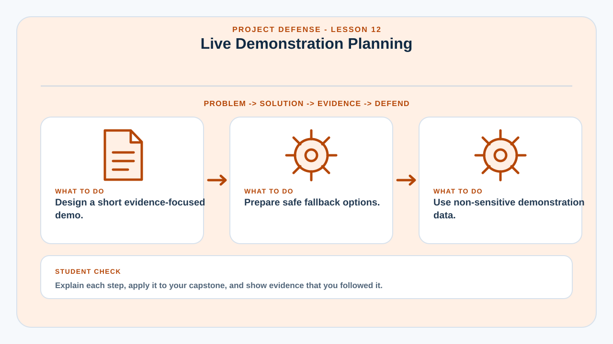
Live Demonstration Planning
A defense demonstration should prove critical workflows without depending on luck.
The demo should be rehearsed using a known dataset, prepared accounts, stable environment, and ordered scenario. The presenter should know what each step proves and avoid unnecessary navigation.
Prepare for common failure modes: no internet, unavailable external API, expired session, forgotten password, slow loading, or projector resolution problems. A local fallback environment and screenshots can support continuity, although they should not be used to conceal a broken system.
Demonstration data should be realistic enough to show system behavior but should not expose private real-world information.
Learning targets
- Design a short evidence-focused demo.
- Prepare safe fallback options.
- Use non-sensitive demonstration data.
Why this matters in a capstone
This lesson helps the team connect implementation decisions to deployment evidence, technical documentation, operational readiness, and questions that may be raised during evaluation or defense.
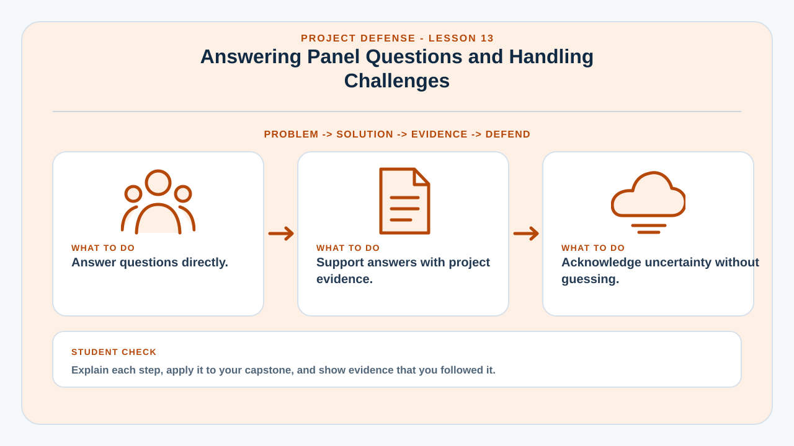
Answering Panel Questions and Handling Challenges
Strong defense answers are precise, evidence-based, and willing to distinguish known facts from assumptions.
Listen for the actual question and answer it first. Then provide the supporting rationale. Avoid giving a long unrelated explanation while the panel is waiting for a direct response.
When the team does not know an answer, it is better to state the limitation and explain how it would be investigated than to invent a technical claim. Panel challenges are often opportunities to show reasoning rather than perfect recall.
Team members should coordinate responsibilities but all members should understand the project's core problem, architecture, data model, testing, and limitations.
Learning targets
- Answer questions directly.
- Support answers with project evidence.
- Acknowledge uncertainty without guessing.
Why this matters in a capstone
This lesson helps the team connect implementation decisions to deployment evidence, technical documentation, operational readiness, and questions that may be raised during evaluation or defense.
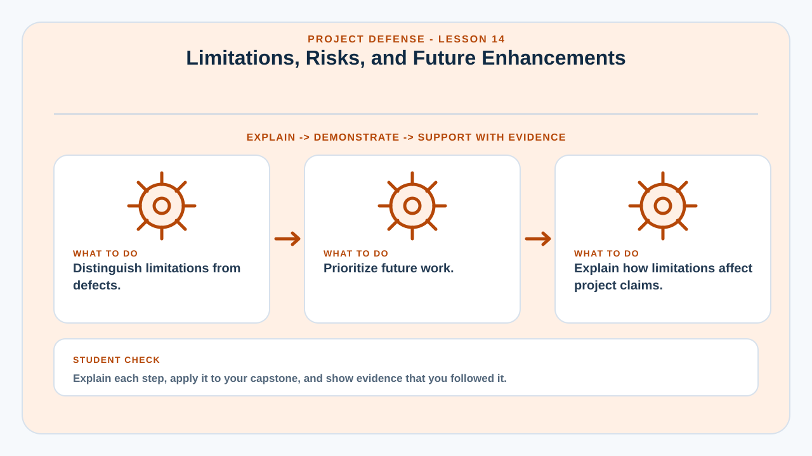
Limitations, Risks, and Future Enhancements
A credible defense distinguishes current limitations from defects and future possibilities.
Limitations may result from scope, resources, environment, available data, hardware, sample size, or time. A defect is a failure to meet an intended requirement. Future enhancement is a proposed capability beyond the completed scope.
The team should rank future work by value and risk rather than presenting an unstructured wish list. Some enhancements may require architecture changes, policy approval, additional security controls, or infrastructure investment.
Discussing limitations transparently strengthens credibility when the team can explain why they exist and how they affect conclusions.
Learning targets
- Distinguish limitations from defects.
- Prioritize future work.
- Explain how limitations affect project claims.
Why this matters in a capstone
This lesson helps the team connect implementation decisions to deployment evidence, technical documentation, operational readiness, and questions that may be raised during evaluation or defense.
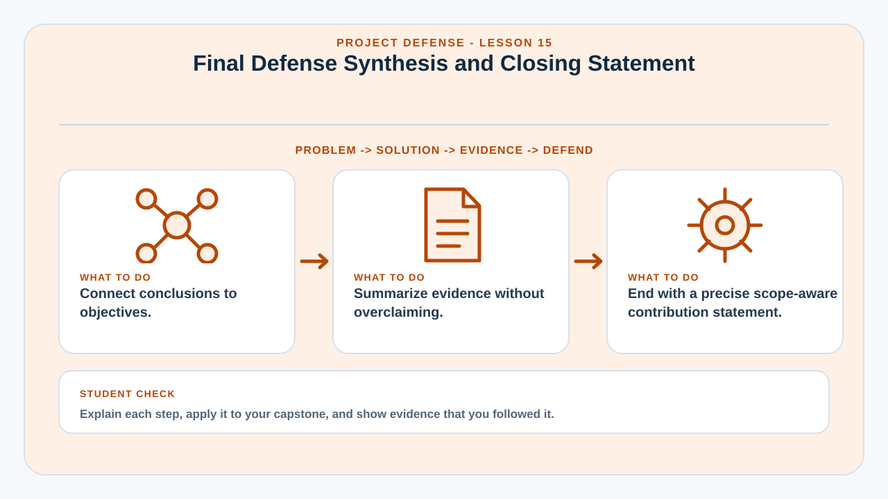
Final Defense Synthesis and Closing Statement
The closing should summarize what was built, what evidence shows, and what contribution the project makes within its defined scope.
A strong conclusion returns to the original problem and objectives. It explains which objectives were achieved and points to the strongest evidence without repeating the entire presentation.
Avoid introducing major new claims in the final minute. Instead, synthesize the demonstrated system, evaluation results, deployment readiness, and acknowledged limitations.
The team should be ready to open supporting evidence immediately after the presentation because panel discussion often moves from high-level claims to detailed technical verification.
Learning targets
- Connect conclusions to objectives.
- Summarize evidence without overclaiming.
- End with a precise scope-aware contribution statement.
Why this matters in a capstone
This lesson helps the team connect implementation decisions to deployment evidence, technical documentation, operational readiness, and questions that may be raised during evaluation or defense.